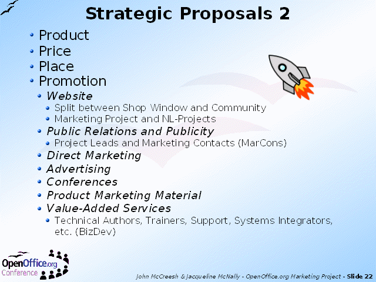

Notes:
The largest group of these come under the heading of "Promotion".
By having all the proposals and actions listed like this, we can offer a 'menu' to volunteers who are looking for something to do in the project.
As we also know the relative importance of various activities and can explain why they are important, we can encourage volunteers to work on the more important actions first.